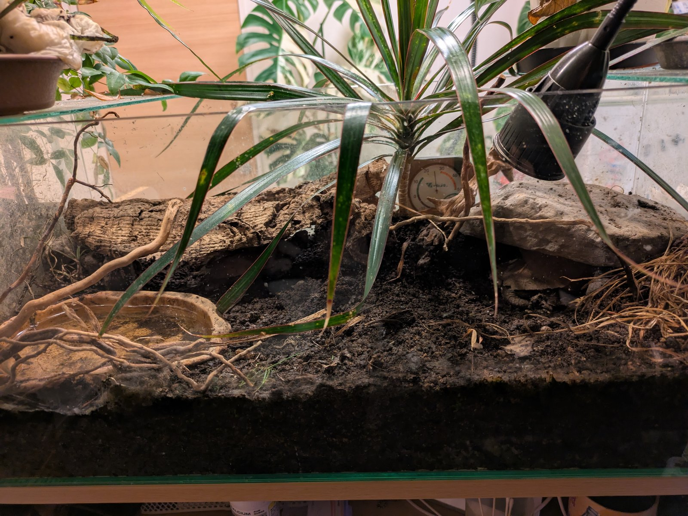

大人のサイズと、成体1匹に必要な場所から考える
大人になっても甲長10〜20cm前後に収まることが多い亀はいます。ただ、ここに並ぶ数字は「この大きさで止まる」という約束ではありません。メスだけが大きくなる種や、資料にはもっと大きな個体が記録されている種もあります。
迷ったときに見てほしいのは、甲長より成体1匹に用意する場所と何十年続く世話のほうです。
亀の大きさは、ふつう甲長で表します。甲羅を真上から見て、前の端から後ろの端までをまっすぐ測った長さです[1]。メジャーを甲羅の丸みに沿わせると、同じ個体でも数字が大きく出ます。首や尾は含みません。
この記事の表では、資料の数字を次の3つに分けました。
お店で見かける子亀は、種によって2〜5cmほどです[2][4][16]。購入時の大きさから大人の姿は想像できません。
一般的な成体サイズの小さい順。表は横にスクロールできます。
| 種名 | 一般的な成体の目安 | 資料に残る上限 | 雌雄差 |
|---|---|---|---|
| スペングラーヤマガメGeoemyda spengleri | 7〜11cm[2] | 10.7cm[2] 13cmとする図鑑もある[3] |
ほとんどない[2] |
| ミシシッピニオイガメSternotherus odoratus | 5〜12cm[5] | 13.7cm[4] | ほとんどない[4] |
| カブトニオイガメSternotherus carinatus | 10〜12cm前後[8] | 17.6cm[6] 16cmとする図鑑もある[7] |
オスがやや大きいことがある[8] |
| フロリダハコガメTerrapene carolina bauri | 11〜15cm[11][13] | 18.7cm（オス）[12] | オスがやや大きい傾向[11] |
| シロクチドロガメKinosternon leucostomum | 信頼できる値を確認できず | オス17.5cm超・メス16.5cm超[9] | オスが大きい[10] |
| ニホンイシガメMauremys japonica | オス10〜15cm メス17〜21cm[14][15] |
メス20.2cm・オス14.5cm[14] メス約21cmとする資料もある[15] |
メスがかなり大きい[14] |
| ロシアリクガメTestudo horsfieldii | 13〜20cm[17] | 22cm[16] 28cm超の報告もある[18] |
メスが大きい[17] |
「一般的な成体の目安」は、野外調査・図鑑・保護団体の資料で大人の大きさとして示された範囲を、当サイトが読みやすく丸めたものです。番号は下の参考資料に対応しています。資料によって測り方や調べた地域が違うため、数字にはずれがあります。食い違いが解消できないものは、両方を載せています。
ここからは、生き物としての事実ではなく飼い方の推奨です。推奨は資料によってかなり違います。表では「当サイトの目安」と「海外の飼育資料などの例」を分けました。当サイトの目安は、国内で手に入る水槽・ケージの規格に合わせた下限寄りの数字です。
| 種名 | 当サイトの目安（成体1匹） | 海外の飼育資料などの例 | 温度管理で大変な点 | 難易度 |
|---|---|---|---|---|
| スペングラーヤマガメ | 60cmケージ〜（床面積を優先・高さは不要） | 種別の推奨は確認できず | 夏の高温に弱く、冷房がほぼ必須 | 中〜上級 |
| ミシシッピニオイガメ | 45cmで始め、成体は60cm水槽 | 幅60cm以上[22]／成体に長さ100cm[23]／約91×46cm[24]／水量160L以上＋陸場[25] | 水中ヒーターで水温を保つ | 入門 |
| カブトニオイガメ | 単独60cm水槽・ペアは90cm | 単独約60cm・ペア約90cm（英国の販売店資料。当サイト正本の出典で、今回は再確認できず） | 水温23〜26℃を保つ | 入門〜中級 |
| フロリダハコガメ | 90cm級から（床材を厚く＋浅い水場） | 屋内で約122×61cm以上（東部ハコガメ）[21] | 冬眠させず加温。湿度70〜90% | 中〜上級 |
| シロクチドロガメ | 60cm水槽から・余裕があれば90cm | 種別の推奨は確認できず | 通年加温（水温24℃以上） | 上級 |
| ニホンイシガメ | 60cmで始め、成体（特にメス）は90cm | 種別の推奨は確認できず | 寒さには強い。水カビを防ぐため水をきれいに、陸場は広く | 中級 |
| ロシアリクガメ | 90cm級ケージ〜（床面積を優先） | 約2.1×1.1m[19]／約91×61cm以上[20]／屋外飼育が理想[19] | 強めの紫外線と高温の日光浴場 | 入門〜中級 |
「当サイトの目安」と温度管理は当サイトの飼育データ（種データベース）、難易度は当サイトの診断データの値です。海外資料の数字はインチ表記をセンチに換算しています。ハコガメの例は近縁の東部ハコガメ（成体16cm前後まで[21]）向けのため、フロリダハコガメにはやや大きめの数字です。
たとえば60cm規格水槽（幅60×奥行30×高さ36cm前後）でも、ニオイガメ向けに水深を15cmにすると、入る水はおよそ27Lです。上の海外資料の「160L」とは数倍の開きがあります。数字の違いは、資料ごとに次の前提が違うことから生まれています。

資料の数字は、最低限を示したものもあれば、成体に十分な広さの目安として書かれたものもあります。どれも、このサイズで一生足りると保証する数字ではありません。迷ったら、置き場所が許す範囲で一段大きいほうを選んでください。
サイズ以外の判断材料をまとめました。種ページには、温度や餌などのより詳しい情報があります。
成体7〜11cm／森の落ち葉の中で暮らす半陸生ガメ
候補になる理由：7種の中でいちばん小柄で、泳ぐ場所がいりません。浅い水入れと、湿った深い床材があれば暮らせます。
うちで飼っていて思うこと：60cmのガラス水槽に、赤玉土と腐葉土を深く敷いて飼っています。難しいのは湿度の数字より、空気をよどませないことでした。小型ファンでゆるく換気するようになってから落ち着いています。餌は生きたコオロギが中心で、人工飼料にまったく見向きもしない個体もいます。
向かない人・環境：夏に部屋を冷やせない、活き餌を切らさず用意できない、手に取って遊びたい。隠れている時間が長く、見守るのが楽しめる人向けです。
スペングラーヤマガメの飼い方を見る成体5〜12cm／水中の底を歩いて暮らす
候補になる理由：7種の中では最も情報が多く、水槽だけで飼える水棲ガメです。日光浴にあまり出てこないぶん、水中で動き回る姿をよく見られます。
向かない人・環境：水換えの手間をかけられない人。体は小さくても水を汚します。驚くと臭腺からにおいを出し、噛むこともあるので、触れ合いを求める人にも向きません。60年生きることもあるとされます[26]。
ミシシッピニオイガメの飼い方を見る成体10〜12cm前後（記録上の最大17.6cm）／水棲
候補になる理由：背中のとがった甲羅が目を引きます。管理はミシシッピニオイガメに近く、同じ機材の考え方で飼えます。
向かない人・環境：45cm水槽のまま一生、と考えている人。ミシシッピニオイガメよりひとまわり大きく、当サイトでは単独でも60cm水槽を目安にしています。気の強い個体もいます。
カブトニオイガメの飼い方を見る成体11〜15cm前後／森や湿地の地面を歩く
候補になる理由：黄色い放射模様が美しいハコガメです。甲長のわりに、歩き回る姿や食べる様子をよく見せてくれます。
向かない人・環境：床面積を取れない部屋。90cm級ケージでも下限寄りで、海外では屋外飼育が勧められることもあります。冬眠させずに温め、湿度も高く保つため、乾燥する冬の管理が続けられるかが分かれ目です。
フロリダハコガメの飼い方を見る記録上はオス17.5cm超／中南米の熱帯の水辺に暮らす
候補になる理由：白っぽい口元が特徴のドロガメで、強い泳ぎより、浅い水の底を歩くタイプです。
向かない人・環境：はじめての1頭として選ぶ人。当サイトの難易度は上級です。熱帯の種なので一年中加温が要り、ドロガメの仲間としては大柄です。一般的な成体サイズの信頼できる値は、今回の調査では見つけられませんでした。
シロクチドロガメの飼い方を見るオス10〜15cm・メス17〜21cm前後／川や池にすむ日本の固有種
候補になる理由：日本の気候で暮らしてきた亀なので、寒さに強く、地域によっては屋外飼育も選択肢になります。
向かない人・環境：「小さい亀」のつもりで迎える人。メスは7種の中でも大きい部類に入り、成体は90cmの容器を考えておきたい種です。野外の個体を捕まえて飼うのはやめてください。絶滅が心配されている種で、迎えるなら国内で繁殖された個体を選びます。
ニホンイシガメの飼い方を見る成体13〜20cm（記録22cm）／乾いた草原の陸ガメ
候補になる理由：水換えのいらない陸ガメで、水棲ガメのような水質管理がありません。7種の中では体がしっかりしていて、日中に歩き回る姿を見られます。
向かない人・環境：床面積を取れない人。穴を掘って逃げようとし[16]、角をよじ登る個体もいます。90cm級ケージは国内での目安で、海外資料はもっと広い場所や屋外飼育を勧めています。飼育下で50年以上生きることもあります[19]。
ロシアリクガメの飼い方を見るなぜこの7種なのか：当サイトの掲載種のうち、資料で成体サイズを確かめられ、かつ大人でもおおむね20cm前後までの種を選びました。もっと小さな亀がいないという意味ではありません。ヒメハコヨコクビガメは寿命や難易度の資料がそろっていないため、この表から外しています。
この記事の目安は、どれも成体1匹の数字です。2匹以上にするなら、単純に広さを足すだけでは済みません。
次のうち1つでも「むずかしい」と感じたら、今は迎えない選択をおすすめします。準備が整ってから迎えても、亀は逃げません。
7種とも、ワシントン条約（CITES）の附属書IIに掲載されています。国内で適法に流通している個体を飼うことは禁止されていませんが、輸入には書類が必要です。爬虫類を買うときは、販売店で現物を確かめたうえで対面の説明を受けることが法律で決められています[28]。通信販売の写真だけで決めないでください。
このページは成体サイズで選ぶためのページです。飼いやすさで比較したい場合は、初心者におすすめの亀ランキング TOP10をご覧ください。サイズと飼いやすさは一致しないため、両方を確認してから決めることをおすすめします。
気になる種が見つかったら、タイプ別に飼育環境を確認することから。水槽・ケージの幅だけでなく、水場と陸場、床材、温度や光の管理も、飼いたい種のガイドで確認してください。表の容器サイズは目安で、どの個体にも同じ設備が合うとは限りません。
上表には水中で過ごす種から陸上中心の種まで含まれています。ニオイガメ・ドロガメは半水棲、ヤマガメ・ハコガメは半陸生、ニホンイシガメは日本在来種、ロシアリクガメは乾燥系リクガメのガイドへ。まず環境づくりの説明を読み、具体的な条件は各種ページとあわせて確認してください。
飼育環境の中で気になる点があれば、次の解説も参考にしてください。水質管理の解説は水棲・半水棲ガメ向けです。温度やUVBの条件は、飼う種に合わせて確認してください。
以下は用品の比較記事です。水槽・ケージの記事にはリクガメ向けも含まれるため、飼う種の用途・サイズに合うかを確認してください。
2026年11月12日に内容を確認した資料です。種名の後ろの数字は本文の番号に対応します。
東京動物園協会の動物解説、英国RSPCAブライトン支部の譲渡資料、米国地質調査所（USGS）のファクトシートも確認しようとしましたが、今回は本文を取得できませんでした。未確認のため、本文の根拠には使っていません。
119種の亀・リクガメを種別ガイドで確認できます。